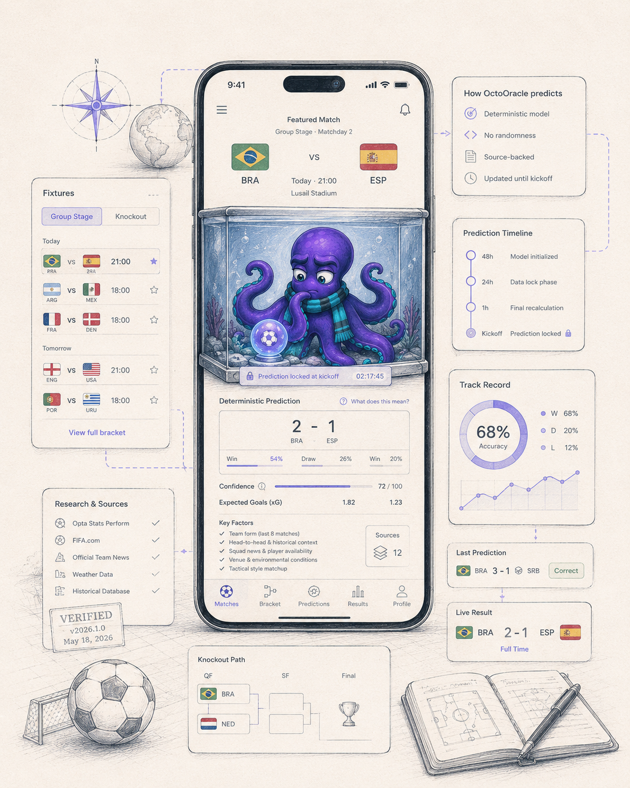

Building
AI agents, workflow tools, and small automation systems that augment GTM work.
I build small AI experiments, write, and translate complex technology into meaningful stories.
Explore the projects, writing, and cultural signals behind my work at the intersection of AI, product marketing, and practical strategy.

A World Cup 2026 experience where a source-backed prediction is revealed through a repeatable aquarium animation. It combines fixture data, statistical signals, prediction history, and honest fallback states.
What this proves: Playful interfaces can make complex systems easier to understand without pretending uncertainty disappears.
On staying in the room.
A reflection on AI, tokens, judgment, and the work of staying in the room.
A listening trail for the reflective side of building: songs that hold tension, memory, distance, and focus without demanding the whole room.
Mood: Melancholic, nostalgic, introspective, and atmospheric.
North's signal: Melancholy creates space. Nostalgia gives the work a shadow. The best ideas often arrive there.
Open on Spotify ->AI agents, workflow tools, and small automation systems that augment GTM work.
Essays on AI, strategy, marketing, and culture through long-form reflection.
Strategy, philosophy, economics, and the future of technology.
Music, scenes, and creative movements that reveal cultural patterns.
Messaging, positioning, GTM strategy, and enterprise buyer clarity.
Hands-on experiments with agents, APIs, GPTs, and emerging workflows.
Turning complex ideas into narratives that connect and drive action.
Using music, books, and culture to understand how movements form and spread.
Open to conversations about AI, product marketing, storytelling, GTM experiments, and selected collaborations.